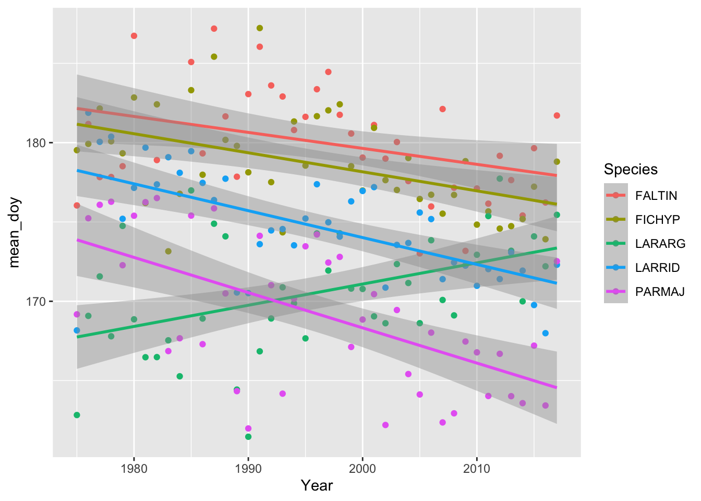
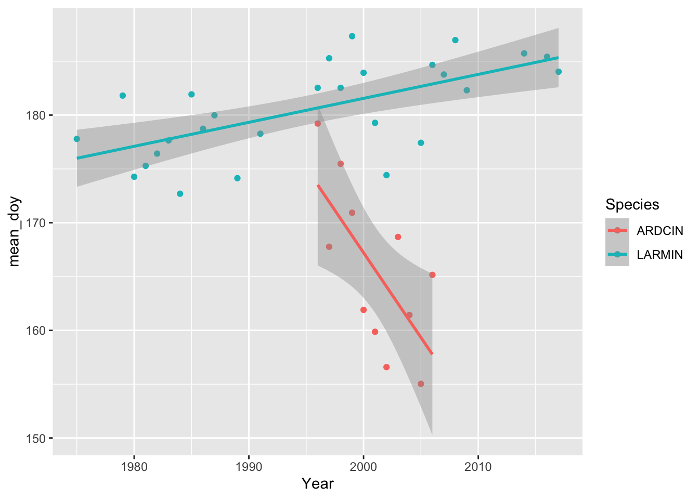

Rows: 821413 Columns: 9
── Column specification ────────────────────────────────────────────────────────
Delimiter: ","
chr (3): NestID, Species, BZ
dbl (6): XEUREF, YEUREF, Day, Month, Year, Dayofyear
ℹ Use `spec()` to retrieve the full column specification for this data.
ℹ Specify the column types or set `show_col_types = FALSE` to quiet this message.
Rows: 73 Columns: 4
── Column specification ────────────────────────────────────────────────────────
Delimiter: ","
chr (3): Abbreviation, Scientific name, Mig
dbl (1): Broods
ℹ Use `spec()` to retrieve the full column specification for this data.
ℹ Specify the column types or set `show_col_types = FALSE` to quiet this message.
Weeeeelll that’s a pukey plot if I’ve ever seen one…Let’s just look at the 5 most data rich species.
#How many data points for each unique species are represented in our dataset? data_richness <- bor_nestlings %>%count(Species)#Arrange in descending order (most to least data points) most_rich <- data_richness %>%arrange(desc(n)) %>%slice(1:5)#Okay now lets looks at a less pukey species trends for just the 5 most data rich spp.most_rich_trends <- bor_nestlings %>%filter(Species %in% most_rich$Species) %>%#oooh indexing by name AND position, FANCY!group_by(Species, Year) %>%summarize(mean_doy =mean(Dayofyear), .groups ="drop")#TA-DA! A less pukey plot! Hooray!ggplot(most_rich_trends, aes(Year, mean_doy, color = Species)) +geom_point() +geom_smooth(method ="lm")
`geom_smooth()` using formula = 'y ~ x'

Cool! Most species have a similar trend to one another except for one which has an opposite trend. Interesting…But which species have the strongest trends?
# Finds the slope of the relationship between y and xtrend <-function(x, y) { xy_lm <-lm(y ~ x)coef(xy_lm)[2]}# Calculate the trend for all speciesbor_trends <- species_trends %>%group_by(Species) %>%summarize(doy_trend =trend(Year, mean_doy))
Quick spot check of 2 species
soi <-c("ARDCIN", "LARMIN")species_trends %>%filter(Species %in% soi) %>%ggplot(aes(Year, mean_doy, color = Species)) +geom_point() +geom_smooth(method ="lm")
`geom_smooth()` using formula = 'y ~ x'

MY Turn!
Find the species with the most positive and most negative trends, then plot just those.
nrow_bor_trends <-nrow(bor_trends) # Use this laterbor_extreme <- bor_trends %>%arrange(doy_trend) %>%# Sort by the day of year trendslice(c(1, nrow_bor_trends)) # Keep just the first (most negative trend) and last (most positive trend) rows# Now plot the most positive and negative species trendsspecies_trends %>%filter(Species %in% bor_extreme$Species) %>%ggplot(aes(Year, mean_doy, color = Species)) +geom_point() +geom_smooth(method ="lm")
`geom_smooth()` using formula = 'y ~ x'
Let’s Bring in More Data
Next we're going to test the hypothesis that smaller birds have more flexible phenology, i.e. the absolute value of the trend is correlated with smaller body sizes.
To test our hypothesis, we need to add AVONET data to our phenology data by joining.
# First, select and rename important columnsavonet_size <-select(avonet, SciName = Species1, Mass_g = Mass)bor_sciname <-select(bor_traits, Species = Abbreviation, SciName =`Scientific name`)
Now join them all together.
bor_trends_size <- bor_trends %>%left_join(bor_sciname, by ="Species") %>%left_join(avonet_size, by ="SciName") %>%mutate(abs_trend =abs(doy_trend))# Plot itggplot(bor_trends_size, aes(Mass_g, abs_trend)) +geom_point() +geom_smooth(method ="lm")
That's kind of hard to interpret. Make a new variable, bor_trends_size2, that removes the missing values in Mass_g and keeps only birds smaller than 2000 g with an absolute trend less than 1.